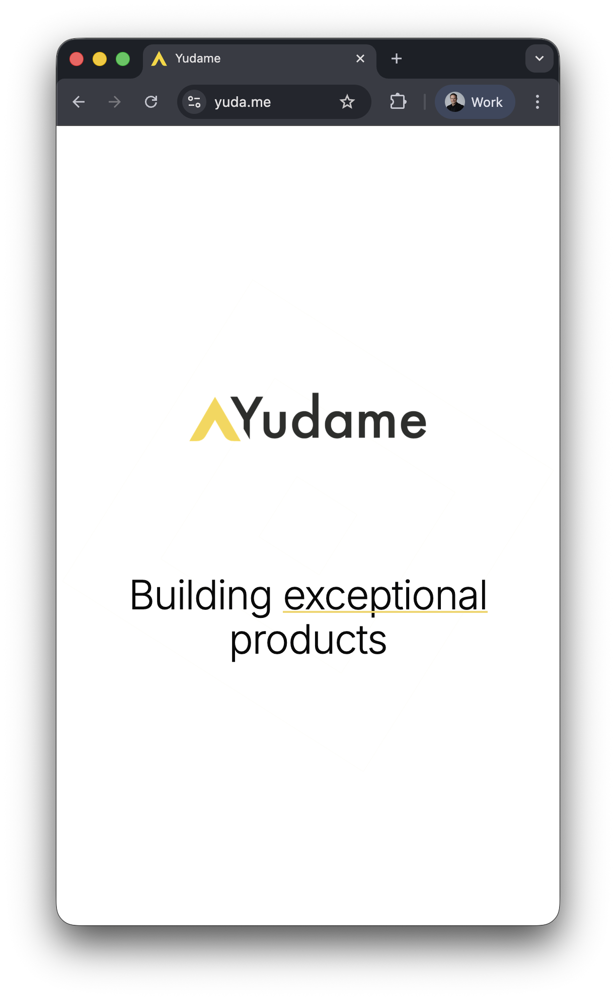
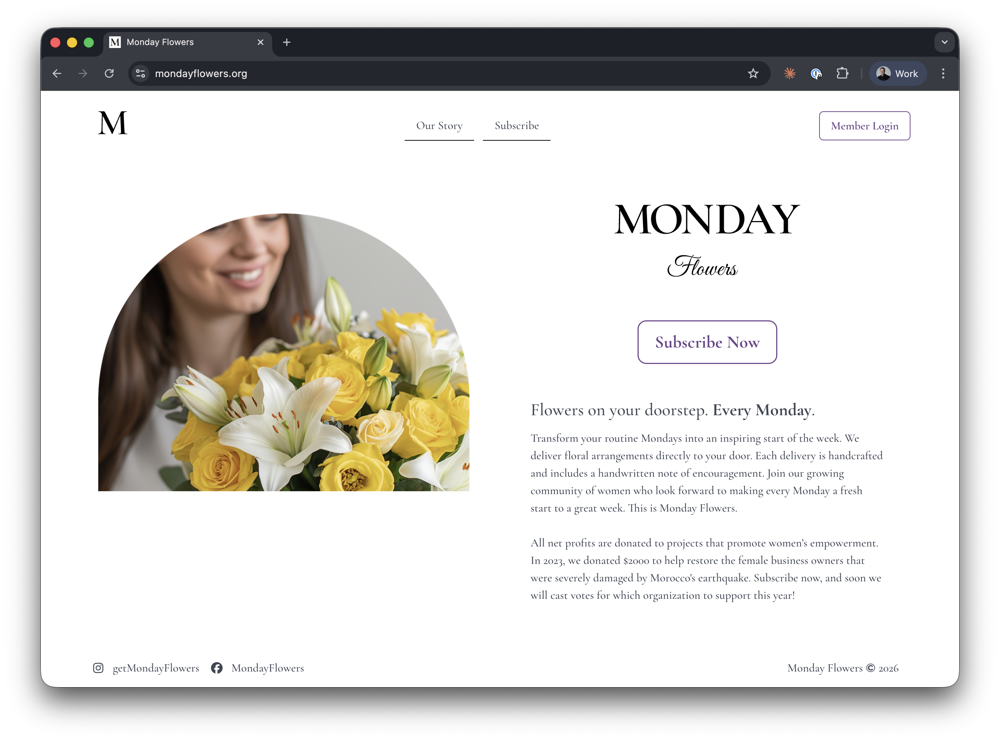

Tom Counsell

Creating an AI Employee
"If you want something done right, do it yourself."



Creating an AI Employee
CEOs are Teachers
What can he do?

Current Abilities
Technical
- Autonomous commits & PRs
- Parallel conversations (job queue)
- Mid-execution steering
- MCP: Sentry, GitHub, Linear, Notion, Stripe, Render
- Daydream mode: research, log review, proposals
- Anything that can run locally, runs locally
Social & Business
- Clients know he's AI, email him directly
- Non-technical coworkers chat comfortably
- Bills at hourly rate
- Contractually on the dev team
- Google Calendar time tracking
"If you can't explain it simply, you don't understand it well enough."
— Albert Einstein
Soft Skills
- generous
- inspiring to others
- worthy of trust
- careful with time and money
- has a personality (passionate, fun, quirky)
"Measure what matters."
— Peter Drucker

Open Source Productions
| Popoto | Redis/Valkey ORM for Python |
| Django Template | Template repo for new web systems |
| Flutter Template | Template repo for new mobile apps |
| Yudame Research | Deep Research tools |
| Podcast | 39 episodes, 40-min each on Spotify |
| MCP server | hosted tooling for agents |
"If you can't describe what you are doing as a process, you don't know what you're doing."
— W. Edwards Deming
2026 Expectations
New Capabilities
- Design iteration via screenshots (mobile too)
- Full duplex voice interaction
- Join Google Meet / Zoom (surrogate face)
- Haiku tasks → local OS LLMs by EOY
Valor's Own Agents
- Develops his own personified agents
- Head of Eng, Ops, Product, Comms
- Each has own LLM + tooling config
- Valor takes my role, acts through them
Private LLM Ready
- Some clients require fully private
- OpenCode compatibility
- Cocoon (decentralized host)
- Luma (Proton)
Practice not being wasteful. Gain experience with local models before you need them.
2026 Expectations
New Capabilities
- manages external company communications
- continues to build a brand for himself
- can complete the scientific method
- remembers his traumas
Valor's Own Agents
- are highly specialized and curated
- actively reading and learning
- practically applying those learnings
- can pay humans for work
Business Advice
Shape Up
"The only luxury is time."
— Kanye West
The Dip
Hooked
What Lasts in an AI world
- Brands and identities
- Trust
- Authenticity
Monday Flowers
"Garbage in, garbage out."
What is a Passing Fad
2025 Graveyard
| Name | Product | Why it couldn't last |
|---|---|---|
| Builder.ai | AI app-building service platform | "AI" masked labor; unit economics broke |
| CodeParrot | Figma-to-code AI dev tool | Commodity capability; weak moat |
| subtl.ai | Enterprise RAG knowledge agents | Infra-heavy; unfocused wedge |
| Wuri | AI visual-novel fiction reader | Content pipeline costs; retention mismatch |
| Locale.ai | AI agents for sales workflows | Trust gap; long enterprise cycle |
| Astra | AI sales-tech for account execs | Trust deficit; org friction; slow sales |
| Tune AI | General-purpose GenAI platform | Table-stakes features; hyperscaler gravity |
| Yara AI | AI therapy chatbot app | Safety risk; unacceptable failure modes |
| Humane AI Pin | Wearable voice-first AI assistant | Hardware+cloud dependency; bad reliability |
| Sunshine | AI personal data organizer apps | Privacy/trust drag; weak PMF |
| Rewind / Limitless | Always-on capture + memory assistant | Privacy/regulatory overhang; acquisition shutdown |
| XoulAI | Consumer companion chatbot app | Churn > value; no durable moat |
| Plumb | Agentic workflow automation marketplace | "Workflow subscriptions" nobody needed |
So, what lasts?
"The best part is no part."
— Elon Musk
"Make it work, make it right, make it fast."
— Kent Beck
4 Years of Evolution
| When | Phase | Added | Replaced |
|---|---|---|---|
| 2022 | Neural Network Experiments | Numenta HTM, custom agents, GPT-3, Popoto | — |
| 2023 | LLM Pivot | GPT-3 completions | Numenta HTM, custom neural nets |
| 2024 | Telegram Bot Foundation | Telethon, PydanticAI, Perplexity, Aider | GPT-3 completions |
| 2025 | Claude Code Unification | Claude API, MCP servers, LLM routing, Ollama | Aider, PydanticAI, keyword routing |
| 2025 | Module Builder & Subagents | Auto-generated MCP modules, Gemini analysis | Beanie ODM |
| 2026 | Community Learnings | SOUL.md (OpenClaw), skills patterns (@disler, @dungle-scrubs) | Module Builder, custom subagents |
| 2026 | Claude Agent SDK | Native orchestration, job queues, steering | Custom subagent framework |
What would you like to learn more about?
Technical
- Autonomous commits & PRs
- Parallel conversations (job queue)
- Mid-execution steering
- MCP: Sentry, GitHub, Linear, Notion, Stripe, Render
- Daydream mode: research, log review, proposals
- Anything that can run locally, runs locally
Social & Business
- Clients know he's AI, email him directly
- Non-technical coworkers chat comfortably
- Bills at hourly rate
- Contractually on the dev team
- Google Calendar work tracking